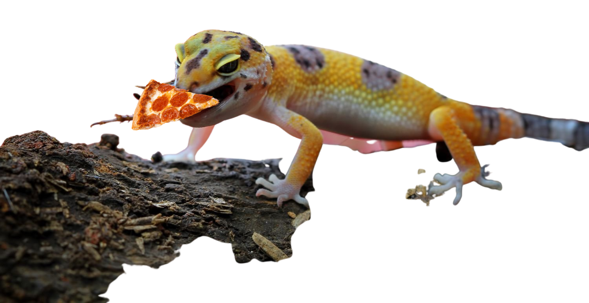
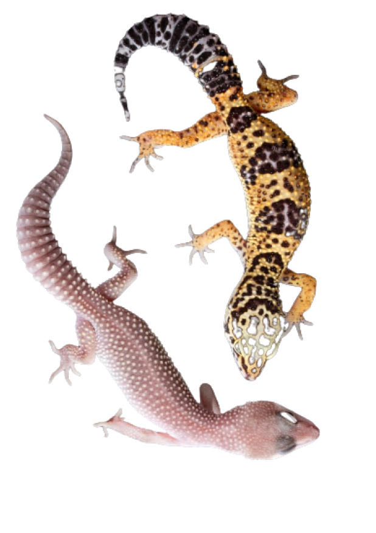
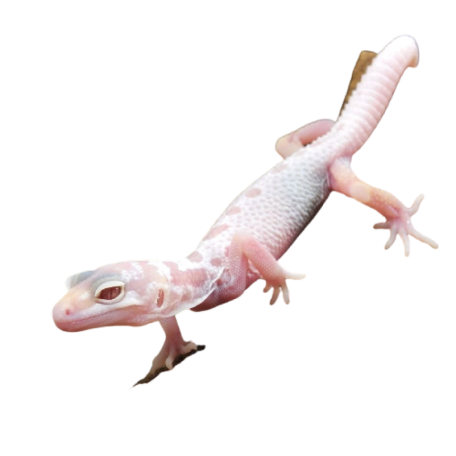
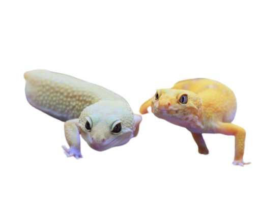
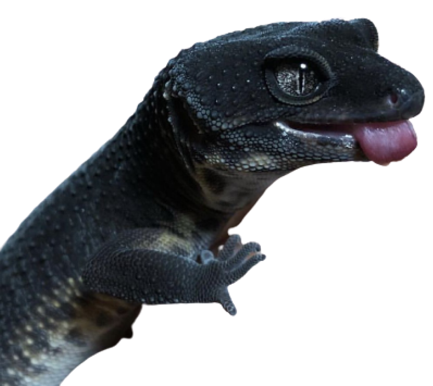

Вни
ние
ма
ле
Зуб
фар

и его пицца
Тип: Хордовые
Класс: Пресмыкающиеся
Отряд: Чешуйчатые
Семейство: Гекконы
Род: Зублефары

Внешне зублефары похожи на гекконов,
но с другим цветом кожи.

Ночные виды,
питаются насекомыми.
В длину достигают до 26 см.
Тело пёстрое, с рядом поперечных
темных полос. Откладывают пару яиц, у части видов
пол определяется температурой инкубации

Зублефары являются
родственниками гекконов,
однако в отличии от
сородичей они имеют
подвижные веки и
“присоски” на лапах.

В современном мире
зублефаров заводят как
домашних питомцев и держат
в специальных террариумах.